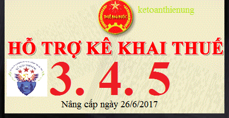

Ngày 26/6/2017 Tổng cục thuế đã nâng cấp Phần mềm HTKK 3.4.5. Phần mềm hỗ kê khai thuế HTKK 3.4.5 và ứng dụng Khai thuế qua mạng (iHTKK) 3.4.6. Download phần mềm HTKK 3.4.5 tại đây:
- Nâng cấp ứng dụng Hỗ trợ kê khai (HTKK) phiên bản 3.4.5, ứng dụng Khai thuế qua mạng (iHTKK) phiên bản 3.4.6 đáp ứng yêu cầu cập nhật ngày bắt đầu sử dụng biên lai phí, lệ phí theo Thông tư số 303/2016/TT-BTC ngày 15/11/2016 của Bộ Tài chính về việc hướng dẫn việc in, phát hành, quản lý và sử dụng các loại chứng từ thu tiền phí, lệ phí thuộc
ngân sách nhà nước
- Đáp ứng yêu cầu nghiệp vụ theo Thông tư số 303/2016/TT-BTC ngày 15/11/2016 của Bộ Tài chính về việc hướng dẫn việc in, phát hành, quản lý và sử dụng các loại chứng từ thu tiền phí, lệ phí thuộc ngân sách nhà nước, Tổng cục Thuế đã hoàn thành nâng cấp ứng dụng hỗ trợ kê khai thuế (HTKK) phiên bản 3.4.5, ứng dụng Khai thuế qua mạng (iHTKK) phiên bản 3.4.6. Trong đó, ứng dụng cập nhật kiểm tra ràng buộc đáp ứng yêu cầu “Thông báo phát hành biên lai và biên lai mẫu phải được gửi đến cơ quan thuế quản lý trực tiếp chậm nhất 05 (năm) ngày trước khi tổ chức kinh doanh bắt đầu sử dụng biên lai” (thay thế quy định trong Thông tư số 153/2012/TT-BTC là phải thông báo phát hành biên lai gửi cơ quan thuế quản lý trực tiếp chậm nhất là 15 ngày trước ngày bắt đầu sử dụng)
Lưu ý:
- Bắt đầu từ ngày 27/6/2017, khi lập báo cáo phát hành biên lai phí, lệ phí có liên quan đến nội dung nâng cấp nêu trên, tổ chức cá nhân nộp thuế sẽ sử dụng các chức năng kê khai tại ứng dụng HTKK 3.4.5, iHTKK 3.4.6 thay cho các phiên bản trước đây.
Download Phần mềm HTKK 3.4.5 về tại đây:
Nếu bạn không tải về được thì có thể làm theo cách sau:
Bước 1: Để lại mail ở phần bình luận bên dưới
Bước 2: Gửi yêu cầu vào mail: ketoandieutam@gmail.com (Tiêu đề ghi rõ Tài liệu muốn tải)
------------------------------------
Kế toán Diệu Tâm - Chuyên Tư vấn Quản trị, Pháp lý & Đào tạo Kế toán – HCNS thực chiến.
